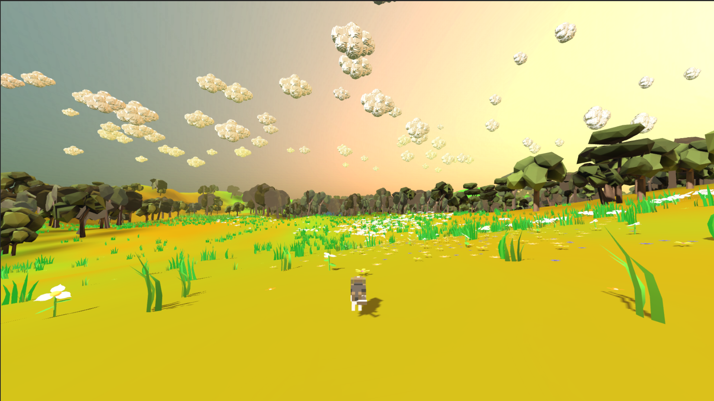
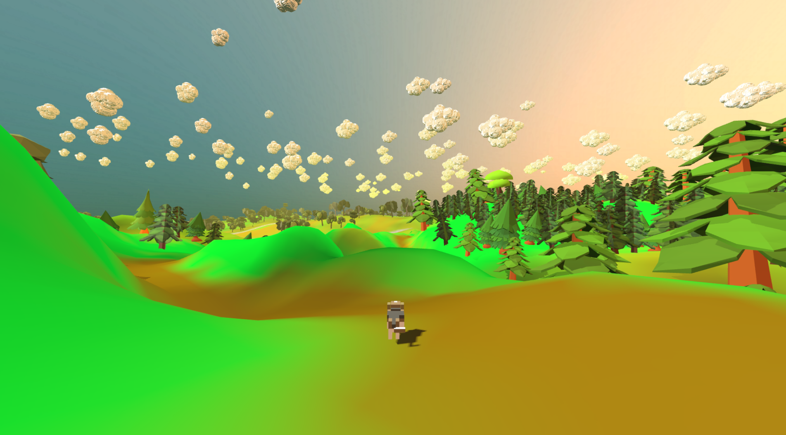
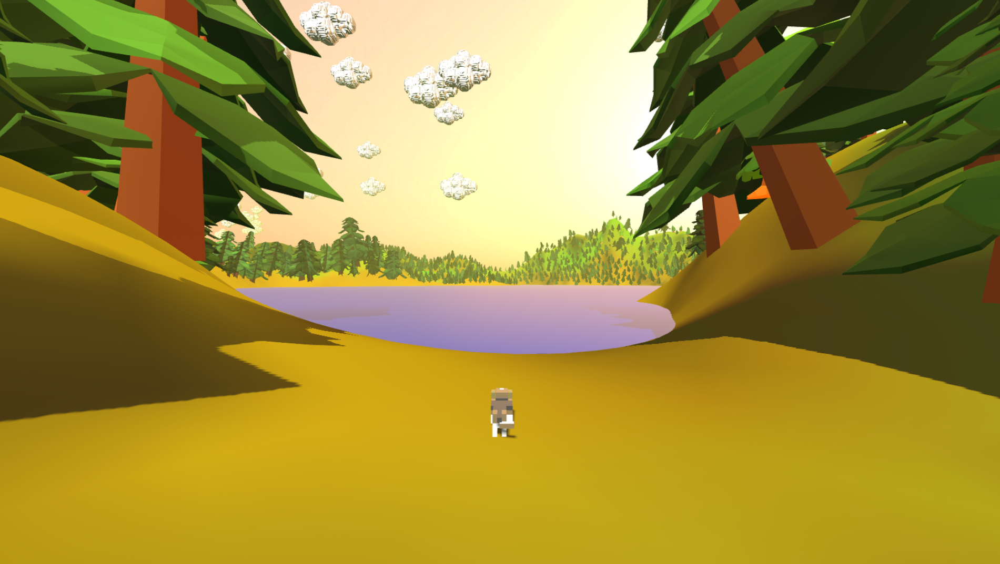
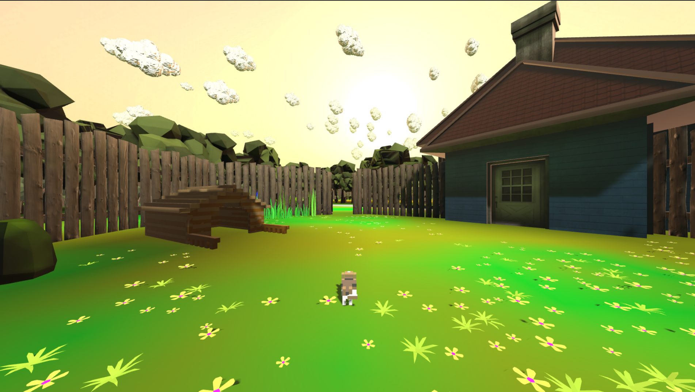
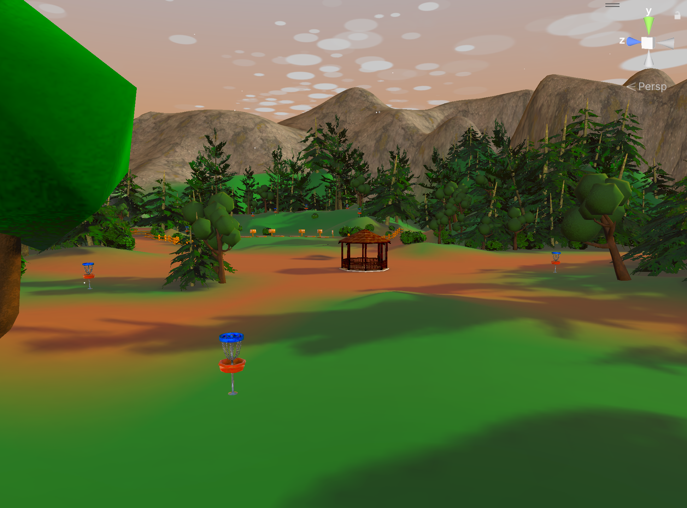
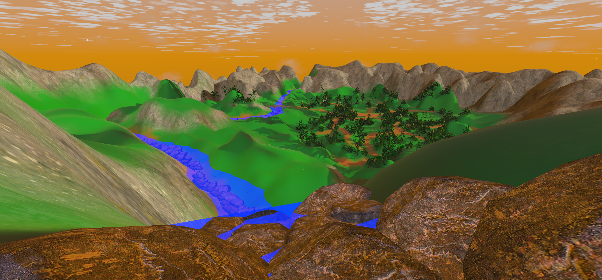

All Projects
Duke's Adventure




About the Game
Duke's Adventure is a whimsical exploration game where you guide Duke, a curious canine, through vibrant meadows, rolling hills, and mystical forests. Discover hidden secrets, meet quirky characters, and help Duke find his way home. The game blends relaxing exploration with light puzzle elements, all set in a beautifully stylized world.
Wind Rider


About the Game
Wind Rider is a disc golf experience at its core, but staged in a serene and atmospheric experience where you soar above breathtaking landscapes, gliding through clouds and exploring new heights. Master the winds, discover hidden locations, and enjoy the freedom of disc flight professionally, or casually.